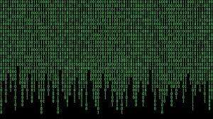

La base de toda la información digital es el sistema binario, compuesto por los dígitos 0 y 1. A través de combinaciones de estos dos valores, cualquier tipo de contenido, ya sea; textual visual, sonoro o audiovisual, puede representarse y ser interpretado por dispositivos electrónicos.
Unificación de medios: Gracias a esta codificación binaria, una sola plataforma o sistema puede manejar textos (como documentos PDF), imágenes (JPEG, PNG), audio (MP3, WAV), vídeo (MP4, AVI) o incluso software.
Estandarización: Permite crear formatos compatibles a nivel global, facilitando el intercambio y la interoperabilidad entre distintos sistemas operativos y dispositivos.
Ejemplo: Un archivo de imagen y una grabación de audio pueden almacenarse juntos en un mismo documento digital (como una presentación PowerPoint), porque ambos están representados internamente como secuencias binarias.
